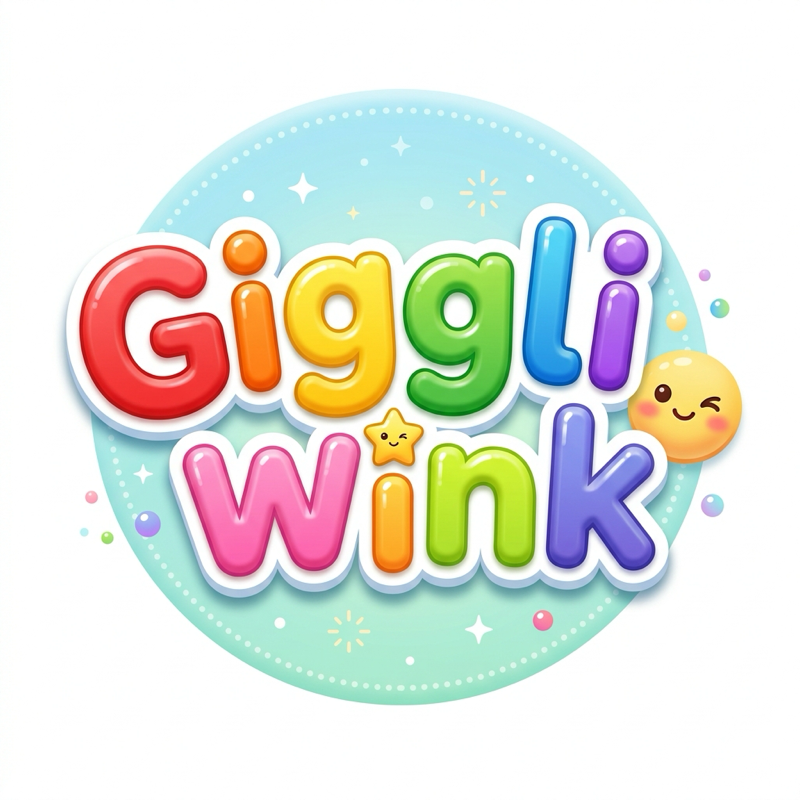

Terms of Service
Last updated: October 19, 2026
1. What this is
"Giggliwink Uploader" is a private tool used only by the Giggliwink team to publish our own original videos to our own Giggliwink accounts on YouTube and TikTok. It is not offered to the public and has no other users.
2. Our content
All videos are created by Giggliwink, with the help of AI tools, and are reviewed by a person before publishing. Giggliwink owns or has the rights to everything it publishes.
3. Use of platforms
We follow the YouTube Terms of Service and the TikTok Terms of Service and Community Guidelines when publishing.
4. No warranty
The tool and the videos are provided as they are, without warranties of any kind.
5. Changes
We may update these terms. The date above shows the latest version.
6. Contact
Questions: contact us through our YouTube channel.